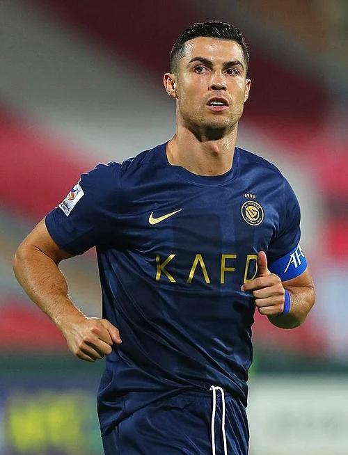

Cristiano Ronaldo dos Santos Aveiro atau yang lebih dikenal dengan nama Cristiano Ronaldo adalah pesepakbola yang lahir di Funchal, Madeira, Portugal pada 5 Februari 1985. Dia merupakan anak bungsu dari pasangan pengurus kebun Jose Dinis Aveiro dan tukang masak Maria Dolores dos Santos Aveiro. Ronaldo memiliki 2 orang kakak perempuan, Liliana Catia dan Elma, dan seorang kakak laki-laki, Hugo.
Pekerjaan sampingan ayahnya sebagai asisten perlengkapan klub bola membuat Ronaldo kecil tertarik dengan olahraga ini. Menginjak usia kesepuluh, Ronaldo tumbuh sebagai penggila sepakbola. Hari-harinya hanya dihabiskan dengan sekolah dan bermain bola. Ronaldo bergabung dengan The Sporting Academia ketika usianya 16 tahun. Sporting Lisbon, tim dari akademi bola tersebut, adalah awal karir Ronaldo. Pertandingan pertamanya bersama tim U-17 membawa atlet dunia ini mencetak dua gol di pertandingan pertamanya.
Penampilan Ronaldo yang memukau saat menjamu Manchester United di stadion Estadio Jose Alvalade membuat pelatih Manchester (MU) saat itu, Alex Ferguson, terkesan. Tawaran dari MU pun sampai padanya. Dengan nilai transfer 12,24 pounds (Rp 225 miliar), pesepakbola berusia 28 tahun ini resmi merumput dengan tim Red Devils di musim 2003. Debut pemain yang bernomor punggung 7 di MU tersebut terjadi pada laga Premier League lawan Bolton dengan skor akhir 4-0.